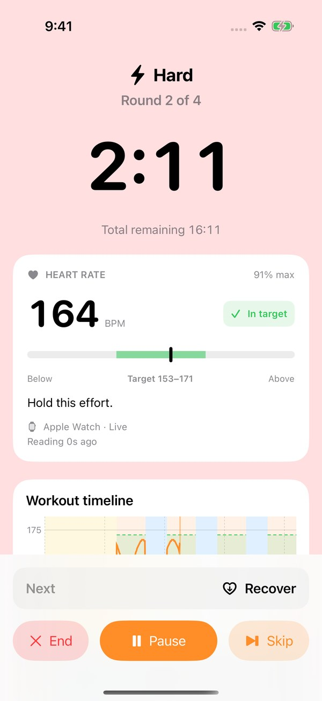
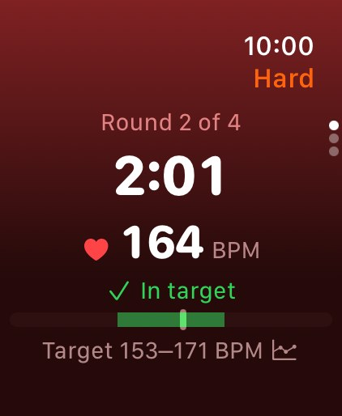
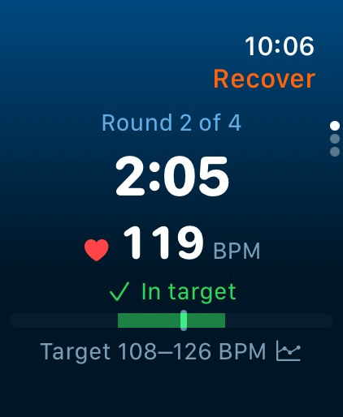
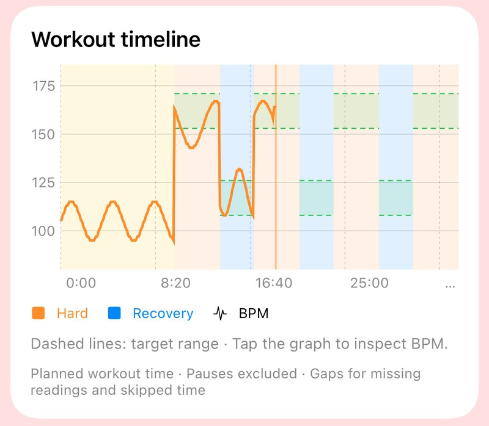
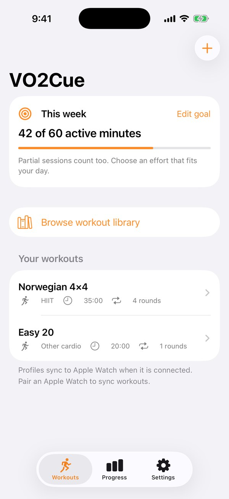
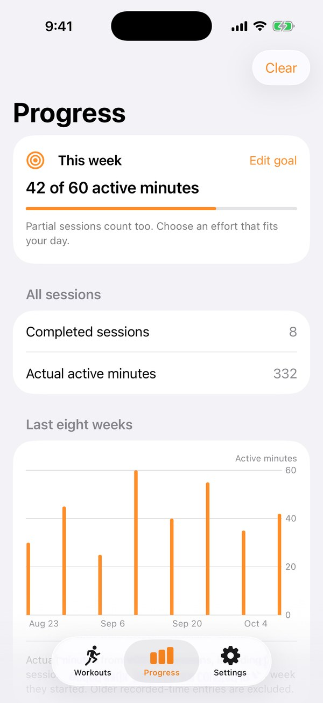

NEW IN HEART SYNC PREVIEW
Your intervals.
Your heart rate.
In sync.
Meet Heart Sync Preview. Follow live Apple Watch heart rate, see your target range, and trace your effort through every interval. Your eyes-free 4×4 coach now gives you more to go on.
For iPhone & Apple Watch · Open source · No account required
Heart Sync is currently an internal TestFlight preview. App Store availability may differ.


Live BPM and your personal range.
Swim · Run · Cycle · Row · Train
HEART SYNC PREVIEW
Find your range.
Own your effort.
Your Apple Watch measures. Your iPhone mirrors. Follow fresh BPM, personal targets, and optional spoken heart-rate cues through hard efforts and recovery.
Build into your range
Live BPM and a clear range meter show where your effort sits against your work target.

See your target shift
A separate recovery range helps you follow the easier part of each cycle.

Every interval. Every heartbeat.
See your BPM line against hard and recovery bands and dashed target ranges. Tap the graph on iPhone to inspect readings, then revisit the recorded graph in workout history.
- Targets that fit you
- Confirm your maximum heart rate. Use personal work and recovery ranges, or set custom BPM targets for a profile.
- In sync, from your wrist
- Watch runs the workout and shares its timer and heart rate with iPhone. Pause, resume, skip, or end from either screen.
- Your heart rate stays yours
- Recorded graphs stay on your devices. Health access is optional; a phone-only timer is always available.
Preview feature · 1.2 (8) Heart Sync is in internal TestFlight testing; availability in the public App Store build may differ. Read the preview setup and testing guide
Actual iPhone and Apple Watch simulator UI with example heart-rate readings, not a recorded workout. The graph image is cropped to show the full timeline card. Live readings require Apple Watch and Health permission; graphs appear after readings are recorded.
A LOOK INSIDE
Custom intervals.
Clear workout cues.
Build the session that fits your day, follow each interval, and keep a record of the work you put in.

Your workout library
Start with the classic 4×4 or keep your own go-to sessions ready.

Every interval, your way
Set work, recovery, rounds, warmup, cooldown, and the cues you want.

Progress that stays yours
Track your weekly goal, actual active minutes, and eight weeks of training. Partial sessions count too.
Actual app screenshots with example workouts and history.
YOUR FIRST SESSION
Ready in
a few taps.
Set it up on your iPhone. Train with your phone or start a session from your Apple Watch.
4 min hard effort + 3 min recovery between efforts, for 4 rounds.
35 minutes total · Optional cooldownChoose or create a workout
Open the Workouts tab and select a profile. Tap the + button to create one, or open a saved workout and tap Edit.
Set your intervals and cues
Choose your activity, work and recovery durations, repeat count, warmup, and cooldown. Enable haptics, tones, or voice cues and customize the cue labels. For Heart Sync Preview, confirm your maximum in Settings → Heart-rate targets and customize profile targets if needed.
Start and follow the cues
Tap Start workout on the workout detail screen. On Apple Watch, open VO2Cue and choose a workout; profiles sync from your iPhone when connected. In Heart Sync Preview, choose Start with Apple Watch on iPhone and allow workout and heart-rate access on Watch to mirror your session. Use Pause, resume, Skip, or End as needed.
Review your session
Open Progress after your workout to review actual active minutes, your weekly goal, and recent sessions. To also save completed workouts to Apple Health, open Settings, enable Save completed workouts, and tap Request Health access.
KNOW YOUR COACH
Built for your intervals.
Private by design.
Clear cues for swimming, running, cycling, rowing, and gym cardio. Set your session, follow the cues, and review the work you put in.
- iPhone
- iOS 17 or later
- Apple Watch
- watchOS 10 or later
- Apple Health
- Optional workout saving
- Your data
- No account, ads, or tracking
BEFORE YOUR FIRST SESSION
Questions, answered.
What is VO2Cue?
VO2Cue is an eyes-free interval timer for iPhone and Apple Watch. It combines a built-in Norwegian 4×4 workout, custom interval profiles, haptics, tones, and optional voice cues with private progress tracking. Use it when checking a screen would interrupt your workout.
How long is the Norwegian 4×4 workout?
The built-in session takes 35 minutes before an optional cooldown: a 10-minute warmup, four 4-minute work intervals, and three 3-minute recoveries between work intervals. You choose your effort; VO2Cue handles the timing and phase changes.
Can I create other interval workouts?
Yes. Create and save profiles with your own work and recovery durations, number of rounds, warmup, optional cooldown, activity type, countdown, and cue labels. Choose haptics, tones, voice cues, and halfway cues to suit your session.
Can I train with Apple Watch without holding my iPhone?
Yes. Open VO2Cue on Apple Watch to start, pause, resume, skip, or end a session from your wrist. Set up and customize profiles on iPhone, then let them sync to your watch while the devices are connected. Once your profile and purchase access are available on the watch, you can run the session there without holding your phone.
Does VO2Cue work offline?
The core interval timer and local workout history do not need an internet connection or a VO2Cue account. Downloading the app, completing or restoring purchases, and sending optional feedback need a connection. Custom profile transfers between iPhone and Apple Watch depend on the devices being able to connect.
Can I lock my iPhone or listen to music?
Enable tones or voice cues for a phone workout to keep scheduled audio cues playing with the screen locked. Workout audio mixes with music from other apps. A call or an audio interruption can pause the session; reopen VO2Cue and resume when ready. With both tones and voice disabled, keep the app open for reliable phase updates.
How does heart rate tracking work?
In Heart Sync Preview, Apple Watch runs the workout and streams fresh heart-rate readings to your iPhone. Set your maximum in Settings → Heart-rate targets, then choose Start with Apple Watch and grant Health permission. Work and recovery have separate targets, with optional heart-rate cues. Recorded readings create a live graph and a saved workout timeline.
What happens if a heart-rate reading is missing?
The interval timer continues. After 15 seconds without a fresh reading, the current BPM and range comparison clear. Previously recorded graph points remain, with gaps for missing readings and skipped time. A phone-only timer works without heart-rate access.
Do I need to share my health data?
No. Apple Health access is optional. You can use the timer and local history without granting it. With permission, Heart Sync Preview shows live Watch heart rate and records local graphs; VO2Cue can also save completed workouts to Apple Health. Profiles and VO2Cue history stay on your devices. Read the privacy policy for details.
What does VO2Cue cost?
VO2Cue is free to download. In-app purchase options include a $1.99 monthly membership or $19.99 lifetime access in the US. Existing paid-app buyers retain lifetime access. Prices and available options may vary by region and app version; check the App Store listing and purchase screen before buying.
Free download confirmed . Membership and lifetime prices are US prices; open-source availability and the contributor reward are separate from in-app purchases.
Created by Greg Adams (Gregory Colton Adams). Product information updated . Need help? Visit VO2Cue support.
OPEN SOURCE. OPEN TO YOUR IDEAS.
Help build VO2Cue.
Get a lifetime thank-you.
VO2Cue is open source under the MIT License. Everyone is welcome to help with bug fixes, new features, accessibility, documentation, and tests.
A free lifetime subscription for a successful pull request.
When the maintainer accepts and merges your contribution, you get a free lifetime subscription to VO2Cue. A merge request (MR) is called a pull request (PR) on GitHub. The reward applies to accepted, merged PRs; submitting a PR or opening an issue alone does not qualify.
Start with an issue to discuss your idea, especially for larger changes. After your PR is merged, ask in the PR thread to arrange your reward with the maintainer. Keep private account and payment details out of public comments.
LESS CLOCK-WATCHING. MORE TRAINING.
Make your next
session count.
No account. No ads. No tracking.
Your profiles and VO2Cue history stay on your devices.
App Store